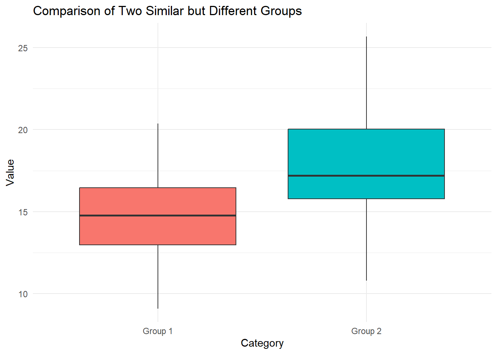
Exercises
Problem 1
You are given the following data describing final grades in a tricky statistics course. There were 20 A’s, 97 B’s, 163 C’s, 76 D’s, 31 E’s and 13 F’s.
What are the most and least common grades?
Organize this data in a frequency table
Find the relative frequency of each grade
What proportion of students failed the course?
What proportion of students got a B or above?
What proportion of students got between a C and an E?
Show solutions
The most common grade is C with 163 instances, and the least common grade is F with only 13 instances.
The table can be organised like this for instance:
| Grade | Number |
|---|---|
| A | 20 |
| B | 97 |
| C | 163 |
| D | 76 |
| E | 31 |
| F | 13 |
- By summing the amount of respective registered grades we find that there are 400 total. We can now divide the number of instances for each grade by the total of 400 to find the relative frequency. For example, we have 20 instances of A’s out of 400 total grades.
\[\frac{20}{400}=0.05\]
We can repeat this for all grades and add to the existing table:
| Grade | Number | Frequency |
|---|---|---|
| A | 20 | 0.05 |
| B | 97 | 0.2425 |
| C | 163 | 0.4075 |
| D | 76 | 0.19 |
| E | 31 | 0.0775 |
| F | 13 | 0.0325 |
The only failing grade is F. We can read from the new table that this we have 0.0325 or 3.25% of students that failed this course.
To find out what proportion of students got a B or above we need the cumulative frequency. We find this cumulative frequency by summing thge relative frequency of all the relevant cases. In this case “B or above” is the same as achieving a B or an A. The relative frequency of B’s is 0.2425 and for A’s it’s 0.05.
\[ 0.2425+0.05=0.2925=29.25\%\]
- To find out what proportion of students got grades between C and E we also need to find the cumulative frequency. Like in e this requires summing the appropriate relative frequencies. From the table in b we can see that the respective relative frequencies are 0.4075 for C, 0.19 for D and 0.0775 for E.
\[ 0.4075+0.19+0.0775=0.675=67.5\%\]
Alternatively we can take note of the fact that we already know the proportion of students that were below this grade range (the proportion of F’s), as well as the proportion of students that scored above this range (the proportion that scored B or above). By subtracting the proportion of students that scored outside this range from 1 (100%), we should arrive at the same answer.
\[1-0.0325-0.2925=0.675=67.5\%\]
Problem 2
You hear that the average starting salary after finishing a master’s degree at NHH is NOK 550 000, the median salary is NOK 525 000, and the mode is NOK 500 000. What can you infer from this?
Show solutions
Though they might seem similar on a surface level, the mode, median and mean give slightly different information.
The mode tells us what the most common observation in the data is. In our case this means that the most common starting salary after graduating with a master’s degree from NHH is NOK 500 000.
The median is the “middle value” in the dataset, meaning that 50 percent of the observations should be below this value, whilst the other 50 percent should be above this value. In our case it means that half of graduates will have a starting salary that’s NOK 525 000 or below whilst the other half get a starting salary of NOK 525 000 or above.
Finally, the mean reflects the average of the dataset. We can tell here that the average is NOK 550 000. Additionally, by looking at everything in context we can also make some minor inferences. We see that the mean is higher than the median, indicating that some data points are skewing the average upwards, i.e. some graduates are earning really well compared to their peers from the get go. Additionally we see that the mode is 500 000, compared to the mean of 550 000. As the mode is the most common observation and is below the median, this seems to suggest that those who end up with a higher starting salary start with a substantially higher one compared to their peers, for the average to skew above the median.
Problem 3
At a retail chain Floormart the Median pay by hour is $25, but the average is $33 per hour. What does this suggest?
Show solutions
Similar to in Problem 2, the indication here seems to be that some employees may be earning significantly more than others. Exactly how many employees are earning more and by how much is impossible to tell given our available information, but it seems likely that the executives or managers and above may have significantly higher pay than most employees in Floormart. These few employees having a much higher pay than for instance new hires or other low level workers could explain this disparity.
Problem 4
If possible, find the mode, median and mean of the following set of dice rolls
\[4,6,5,5,6,2,1,6,3,6,2,1,3\]
Show solutions
The mode is the most common observation. As 6 appears 4 times here, more than any other roll, 6 is the mode.
To clearly find the median we can sort the data from lowest to highest observation. We then end up with {1,1,2,2,3,3,4,5,5,6,6,6,6}. We have 13 observations here, so the median will be given by the 7th observation from the bottom. In our case we find that 4 is the median.
Finally we can find the mean by taking the average of the observed rolls.
Recall the formula for averages is
\[\overline{X}=\frac{1}{n}\sum_{i=1}^{n}X_i\]
In our case we can just sum each observation and divide by the number of observations, which is 13.
\[\begin{align*} \overline{X}&=\frac{1}{13}(1+1+2+2+3+3+4+5+5+6+6+6+6)\\ &=\frac{50}{13}\approx3.846 \end{align*}\]
Problem 5
If possible, find the mode, median and mean of the following set of favorite colors
red,blue,blue,green,yellow,green,green,blue,red,red,pink,purple,blue
Show solutions
The mode is found by finding the most common observation. Here “blue” is the most common favorite color, with 4 instances, and thus “blue” is our mode.
It is not possible to find a median within this data, as we need to be able to logically sort the data to be able to have a meaningful median. I.e. as the data is not ordinal, we can’t find a median.
It is not possible to find a mean from this data. We need numerical data to be able to give a meaningful mean.
Problem 6
What level of data is required to find modes, means, and medians? (Categorical, ordinal, etc.)
Show solutions
To find a mode we need at least categorical data.
To find a median we need data that is ordinal.
To find a mean we need data that is numerical.
Problem 7
You get the dataset \[1,1,1,1,1,3,3,3,3,7,7,7,7,9,9,9.\]
Find the mode, median and mean of the above set.
Find the the first and third quartile of the set.
What are the 0th and 100th percentiles of the set?
Would the median change if you were to add a single datapoint of 11 to the set? What would the median of the new set be? What if we were to add two datapoints of 11?
Show solutions
- The most common observation is 1, thus the mode is 1. We have an even number of observations in this set, 16.
By taking the average of the two middlemost values we will find the median. Both the 8th and 9th value in the set are 3, and thus the median of the set is 3.
We can find the mean by taking the average of the data.
\[\begin{align*} \overline{X}&=\frac{1}{16}(1+1+1+1+1+3+3+3+3+7+7+7+7+9+9+9)\\ &=\frac{72}{16}=4.5 \end{align*}\]
- The first quartile indicates that 25% of observations should be below this threshold. In our case we see that the first quartile would fall between the 4th and 5th observation, which are both 1, telling us the 1st qaurtile is 1.
The 3rd quartile indicates that 75% of observations should be below it. The 12th and 13th observations are both 7, letting us know that the third quartile is 7.
The 0th percentile indicates the minimum value of the set while the 100th percentile indicates the maximum value. We can then say that the 0th percentile is 1 and the 100th percentile is 9.
If we add a datapoint of 11 to the set, we would now have 17 observations, meaning that the 9th observation from the bottom would indicate the median. The 9th observation from the bottom is 3, which is the same median as in the previous case, so the median would not change. If we were to add two datapoints of 11 to the set, we would have 18 observations. With 18 observations we have to take the average of the two middlemost observations after sorting. The two middlemost observations are the 9th and 10th ones from the bottom, meaning 3 and 7. The average would then be:
\[\frac{1}{2}(3+7)=\frac{10}{2}=5\]
The median in this case would be 5, so it would indeed change from the previous case.
Problem 8
You get this dataset of a group of 11 people and their respective heights in centimetres.
\[184,157,168,172,198,154,192,161,186,177,165.\]
Find the mean/average height of this group.
Find the variance in height in this group and the standard deviation.
Does the variance and standard deviation seem big, small or somewhere in between in this context?
What would be the effect on the variance of adding another person to the sample that is of the average height we found in a. Would the variance increase, decrease or stay the same?
What would be the effect of adding another person to the group that’s 200cm tall. Would the variance increase, decrease or stay the same? Why is the change intuitive?
What would be the effect of adding another person to the group that’s 140cm tall. Would the variance increase, decrease or stay the same? Why is the change intuitive? Why is the change in variance here greater than the one in e.?
Show solutions
a)We sum our observations, and divide by 11, which is the number of observations.
\[\begin{align*} \overline{X}=\frac{1}{11}(&184+157+168+172+198+154+192+161 \\ &+186+177+165)=\frac{1914}{11}=174 \end{align*}\]
- Here we need to first recall the formula for variance.
\[S_X^2=\frac{1}{n-1}\sum_{i=1}^{n}(X_i-\overline{X})^2\]
We recall that the mean we found in a is 174 and that we have 11 total observations. Now we have everything we need to plug in our data and find the variance.
\[\begin{align*} S_X^2&=\frac{1}{11-1}\bigg((184-174)^2+(157-174)^2+(168-174)^2 \\ &+(172-174)^2+(198-174)^2+(154-174)^2+(192-174)^2+(161-174)^2+ \\&(186-174)^2+(177-174)^2+(165-174)^2\bigg)=\frac{2132}{10}=213.2 \end{align*}\]
Now we only need to find standard deviation.Recall that the standard deviation is the square root of the variance.
\[S_X=\sqrt{S_X^2}=\sqrt{\frac{1}{n-1}\sum_{i=1}^{n}(X_i-\overline{X})^2}\]
In our case we need only plug in the variance we have already found.
\[S_X=\sqrt{213.2}\approx14.6\]
Variance is hard to interpret directly, but the standard deviation is very simple. The standard deviation tells us that the average absolute difference from the mean in our data. Here we see that the standard deviation is 14.6cm, so on average the people in this group are 14.6 away from the the mean in terms of height. This means the we would expect a random person from this group to be either about 159cm tall or 188cm tall. It’s not all that simple to say if this is a lot or not, that depends on the data collected. If this is a sample from a group of Norwegian men age 20, this could seem like a very big standard deviation and variance. However, if this is a group of men and women with an age range from 14 to 35, this might not seem like such a big variance.
If we were to only add more people of the average height we found (174cm) the variance would decrease. There are two effects in play here. The when we add more observations our n gets bigger, and thus we divide by a larger number, but we also have to add another squared difference from the mean. In this case we add another observation that’s exactly equal to the mean. Firstly what effect will this have on the mean itself? Intuitively, the mean will not change in this case. Notice that the squared difference between the mean and itself is 0. \[(\overline{X}-\overline{X})^2=(174-174)^2=0^2=0.\]
Let’s now add this to our equation for variance. Since we have one more observation we will be dividing by (n-1)+1=n, instead of n-1.
\[\begin{align*} S_{X1}^2&=\frac{1}{n} \left(\sum_{i=1}^n(X_i-\overline{X})^2+(\overline{X}-\overline{X})^2\right) =\frac{1}{n} \left(\sum_{i=1}^n(X_i-\overline{X})^2+0\right) \\&=\frac{1}{n} \left(\sum_{i=1}^n(X_i-\overline{X})^2\right) <\frac{1}{n-1} \left(\sum_{i=1}^n(X_i-\overline{X})^2\right)=S_X^2 \end{align*}\]
For those that don’t find it intuitive that the mean stays the same when you add more observations the equal the mean:
Underneath I have shown algebraically what happens to the mean when you add one more observation in the sample that equals the mean. This can easily be extended to adding any number, m, more observations (try for yourself!).
\[\begin{align*} \overline{X}_1&=\frac{1}{n+1} \left( \sum_{i=1}^{n}X_i+\overline{X} \right)=\frac{1}{n+1}\left( \frac{n}{n}\sum_{i=1}^nX_i+\overline{X} \right) \\ &=\frac{1}{n+1}\left(n\overline{X}+\overline{X}\right) = \frac{n+1}{n+1}\overline{X}=\overline{X} \end{align*}\]
Now, let’s see what happens to the variance, when we add another observation that equals the mean.
\[S_{X1}^2= \frac{1}{n-1+1}\left(\sum_{i=1}^n(X_i-\overline{X})^2+(\overline{X}-\overline{X})^2\right)\]
- We can amend our data by adding the new observation of 200cm, and with this we can compute the new mean and variance. We will notice that since we add an observation that is higher than the average, the mean will increase, and we will also find that the variance (and consequently the standard deviation) will both increase. The new values will be:
\[ \overline{X}\approx176.17 \\ S_X^2\approx250.15\]
The intuition is simply that since our new observation is very different from our mean, the variance will increase. Adding the new squared difference has a greater effect than dividing by a higher number. Recall that our original mean was 174 and our original standard deviation was approximately 14.6. This means that the average absolute difference between an observation and the mean is about 14.6.
\[|200-174|=26>14.6\]
This means that by adding this new observation, since it’s difference from the mean is so clearly much greater than the standard deviation, the standard deviation should increase by adding this observation. When the standard deviation increases, so will the variance. (Note that we can only intuit in this way when the absolute difference between the new observation and the mean is quite a bit greater than the standard deviation. The intuition you should build from this is that new observations that are very different from the mean will increase the variance, and consequently, observations that are close to the mean will decrease the variance.)
- This case is very similar to the one in e. The only notable difference is that we add an observation that is much lower than the mean, rather than one which is much higher. Computing the the new mean and variance we get:
\[\overline{X}\approx171.17 \\ S_X^2\approx290.15 \]
The intuition here is exactly the same as in e. Since the new observation is very different from the mean, the variance should increase. Let’s compare the absolute difference between the mean and the new observation to the standard deviation.
\[|140-174|=|-34|=34>14.6\]
From this it should also be clear why the change in variance here is greater than the one in e. Since 140 is an observation that is farther away from the mean (174), than 200, the increase in variance will be greater.
(Extra challenge for those that can’t get enough: Can you intuit what would happen in an opposite case? Would the variance change more if we added a new observation of someone that was 177cm tall or with someone that was 172cm tall?)
Problem 9.
Recall the variance and standard deviation found in Problem 8b. Imagine that instead of the height of people, the variance and standard deviation was instead found from data on height of trees (Note: the collected data is not necessarily the same even though the variance is the same). Does the variance and standard deviation feel big, small or somewhere in between in this context?
Show solutions
This problem is mainly about interpretation, but let’s consider the standard deviation. We have a standard deviation of 14.6cm. A height difference of 14.6cm between two people is quite large, and very noticeable. When it comes to trees, however, that is not necessarily the case. Short trees can be as short as just a few centimeters, where as the tallest trees can reach upwards of 100 meters(!). Even without considering the shortest and tallest trees, we find that there can easily be several meters of difference between completely ordinary trees. Since we only know that we are working with trees in this case, it’s hard to assume anything about the data, but looking at the standard deviation we can tell that these trees must be very similar in stature as far as trees are considered. If anything, this variance, that seems quite reasonable (or even very large), when we consider the heights of people, seems completely minuscule when we consider trees instead. It’s impossible to say whether variance and standard deviation is large or small with no context, as is illustrated with this comparison.
Problem 10
In what scenario would we get a Variance of 0?
Show solutions
For the variance to be 0, our observations simply can’t vary. This means that all observations have to have the same value.
This can be shown algebraically. Let all observations \(X_i=X\) be equal. Then \[\overline{X}=\frac{1}{n}\sum_{i=1}^nX_i=\frac{1}{n}\sum_{i=1}^nX=\frac{n}{n}X=X \]
It is clear that all observations here are equal to the mean, which gives us.
\[\begin{align*} S_X^2&=\frac{1}{n-1}\sum_{i=1}^n(X_i-\overline{X})^2=\frac{1}{n-1}\sum_{i=1}^n(\overline{X}-\overline{X})^2 \\ &=\frac{1}{n-1}\sum_{i=1}^n0=\frac{0}{n-1}=0 \end{align*}\]
By looking at the equation for the variance, we can tell that if any one or more observations were to deviate from the mean, there would be variance in our data.
Problem 11
You have a dataset with six observations and a mean of 50. Show that when you have any observations outside of the interval [45;55] the variance will always be greater than 5.
Show solutions
We have received this information:
\[n=6, \ \overline{X}=50\]
To show that that our variance will always be greater than 5 when we have an observation outside of the given interval, let’s consider the situation that would create the least variance. Consider a situation where only one observation is 55, and the rest of the observations have to make up for this by all of them being a bit less than 50. Since we use squared sums when we compute the variance, we would get the least variance from the 5 last observations being equally close to to the mean. We can use an equation to find out what each of these 5 observations have to equal. For this we use the formula to calculate an average.
\[\overline{X}=\frac{1}{n}\sum_{i=1}^nX_i\]
Since we know that the average we’re looking for is 50, one observation is 55 and the last 5 observations are equal, we get an equation with one variable.
\[\begin{align*} 50&=\frac{1}{6}(5X+55) \\ \Rightarrow 6\cdot 50&=5X+55 \\ \Rightarrow 300&=5X+55 \\ \Rightarrow 300-55&=5X \\ \Rightarrow 245&=5X \\ \Rightarrow X&=49 \end{align*}\]
Now we have a clear view of the data that would give the minimum variance. {49,49,49,49,49,55} Finally, we can compute the variance.
\[\begin{align*} S_X^2&=\frac{1}{6-1}\left(5(49-50)^2+(55-50)^2 \right) \\ &=\frac{1}{5}(5\cdot(-1)^2+5^2)=\frac{1}{5}(5+25) \\ &=\frac{30}{5}=6>5 \end{align*}\]
Problem 12
Consider the two following data sets, A and B. \[A=\{52, 49, 53,57,48,48,57,53\}\] and \[B=\{29,56,31,21, 79, 45, 51, 21\}\]
Find the interquartile ranges of both A and B. Based on the ranges, which one seems to indicate a higher standard deviation?
Find the variance and standard deviation of both data sets. Do the results fit with your guess from a).
What intuition can interquartile ranges give when comparing variances? Can you always trust this intuition fully?
Show solutions
- To find the interquartile ranges we have to first find the quartiles in each data set, and to find the quartiles we need to order the sets as well. We now end up with
\[\begin{align*} A=\{48, 48, 49, 52, 53, 53, 57, 57\} \\ B=\{21, 21, 29, 31, 45, 51, 56, 79\} \end{align*}\]
Now that both sets are ordered we can find the frst and third quartile in each of them by considering the 25th and 75th percentiles. In both sets the 25th percentile will fall between the second and third observations, whereas the 75th will fall between the 6th and 7th. Thus we take the average between these observations to fin the respective quatiles.
\[\begin{align*} q_{1A}=\frac{1}{2}(48+49)=48.5, \ q_{3A}=\frac{1}{2}(53+57)=55 \\ q_{1B}=\frac{1}{2}(21+29)=25, \ q_{3B}=\frac{1}{2}(51+56)=53.5 \end{align*}\]
Finally, we can find the interquartile ranges and compare them. Recall the formula for an interquartile range is given by the difference in quartiles.
\(IQR=q_3-q_1\) Now, let’s compute the IQR for both A and B. \[\begin{align*} IQR_A=55-48.5=6.5 \\ IQR_B=53.5-25=28.5 \end{align*}\] Here we can see that the interquartile range for B is much larger than for A, which indicates a larger spread of data in B, which should give us a higher standard deviation.
- Let us compute the variances and standard deviations. By using the formulas familiar to us we will end up with.
\[\begin{align*} \overline{X}_A=52.125, \ S^2_A\approx13.27, \ S_A\approx3.64 \\ \overline{X}_B=41.625, \ S^2_B\approx403.70, \ S_B\approx20.09 \end{align*}\] We can easily see that the indication from the IQR told us which data set had more variance.
- The reason interquartile ranges can help give an indication of what data has more variance, is cause the interquartile range also gives an indication of how spread out the data is. The interquartile range tells us how far the 75th percentile is from the 25th percentile, i.e. a range for the middle 50% of the data. Keep in mind, however that a higher IQR does not necessarily mean a data set has a higher variance, even though it might seem that way at a first glance. When computing variance and standard deviation extreme values are very highly weighted even though they may not have any effect on the IQR.
Let’s finish up by giving a quick example. We can amend A such that we change one of the data points that reads 57 to 1000 instead. We will call the amended set A’. We then get: \[\begin{align*} A=\{48, 48, 49, 52, 53, 53, 57, 57\}\rightarrow A'=\{48, 48, 49, 52, 53, 53, 57, 1000\} \end{align*}\] Note here that the first and third quartile have not changed, and thus the IQR stays the same. However, when computing mean, variance and standard deviation we are going to see huge shifts.
\[\begin{align*} \overline{X}_{A'}=170, \ S^2_{A'}=112482.86, \ S_{A'}\approx335.38 \end{align*}\]
The 1000 observation is clearly an outlier here, but the point is that we always have to be careful when saying the IQR implies the variance, or anything similar. In many cases it may be true, but we should always consider the data we’re working with.
Problem 13
Consider the Boxplot below.
Which of the two groups has the higher median?
Which of the two groups seems to have the higher variance?
Which of the two groups has the higher IQR? Does this coincide with the one that has the higher variance?
Would you think there are any outliers in the data? Why? Why not?
Show solutions
The bold, black, horizontal line in each box represents the median for the data. We note that for group 1 the median is a little less than 15, and for group 2 it seems to be about 17. As such, group 2 has the higher median.
We note that the whiskers for group 2’s plot stretch out far wider than the ones for group 1. There are no points beyond the whiskers for either group, and as such we can conclude that group 2 probably has the higher variance. This coincides with the code used to generate the data.
We note that the box for group 2 is far taller than the one for group 1, which clearly shows that group 2 has a higher IQR. The lower line of the box indicates the the 1st quartile and the upper line gives the 3rd quartile. As such, the height of a box represents the IQR for the data used to generate the boxplot. This indeed coincides with the data we believe to have the higher variance.
We see no points beyond the whiskers of the boxes, and as such we treat none of the data as outliers. The whiskers here represent 1.5 times the IQR of the data, beyond either the 1st or 3rd quartiles. in many cases this covers all the whole range of data in a sample, however that is not always the case. In the below boxplot I have used the same data, however I added as single, clear outlier to group 1. This outlier is now the new maximum value and is indicated as a red dot. In general, when we consider outliers using boxplots, it’s most common to start by considering everything beyond the whiskers of the plot.
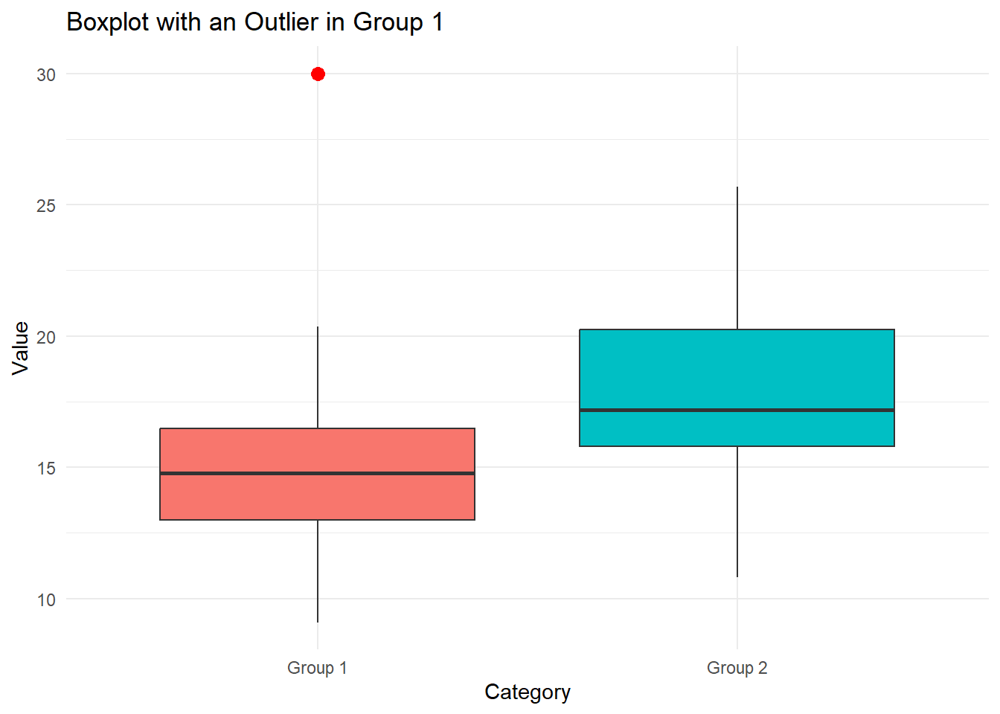
Problem 14
Consider the two viloinplots below.
In what ranges in each of the groups is data most dense?
Which group has the highest maximum, which one has the lowest minimum?
Is it clear which group would have a higher median? Do you think this group also has a higher mean? Argue why or why not?
What are some key differences to consider between a violin plot and a boxplot?
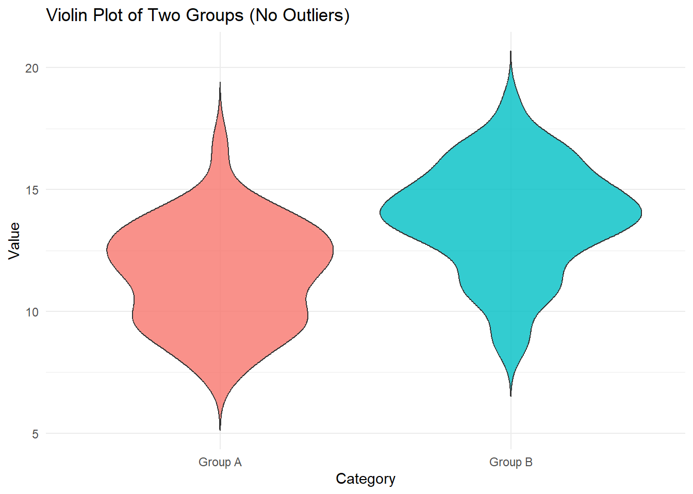
Show solutions
From a visually inspections it’s not 100% clear what the exact ranges are, but it does seem like for group 1 data is most dense in the intervals (12, 13), whereas for group 2 it’s around (13, 15). We see this as this is where the “violins” are the widest.
A key aspect of violin plots is that they chow the distribution of the data in its entirety. This means that the top and bottom ends of the violins indicate the range of the data. Here it??s clear rthat group n2 has the higher maximum and group 1 has the lower minimum.
The median is the middle observation. Though we can’t see the exact point on a violin plot, we can see that the group 1 is comparatively “bottom-heavy” next to group 2, which indicates that the median should be higher in 2. We can also infer that the higher density of high numbers in group 2 indicate a higher mean as well. We can’t be 100% certain though, as we have no direct way of telling. (In an obvious case such as this though we can be at least 99% certain).
The key distinctions between violin and box plots are what attributes of the data they show. Whereas box plots show summary statistics such as the median, 1st and 3rd quartile and IQR, the violin plot shows how the data is distributed (i.e. the density of the data). As you should have noticed from the exdercises above, we can’t make many direct statements based on the violin plot, other than to draw semi-certain conclusions based on where we see the data is more and less dense. The boc plot also isolates ourtliers in a more clear way compared to the violin. Take a look at the below figure to see boc plots in the same data as the violins. Were the inferences from the above exercises correct?
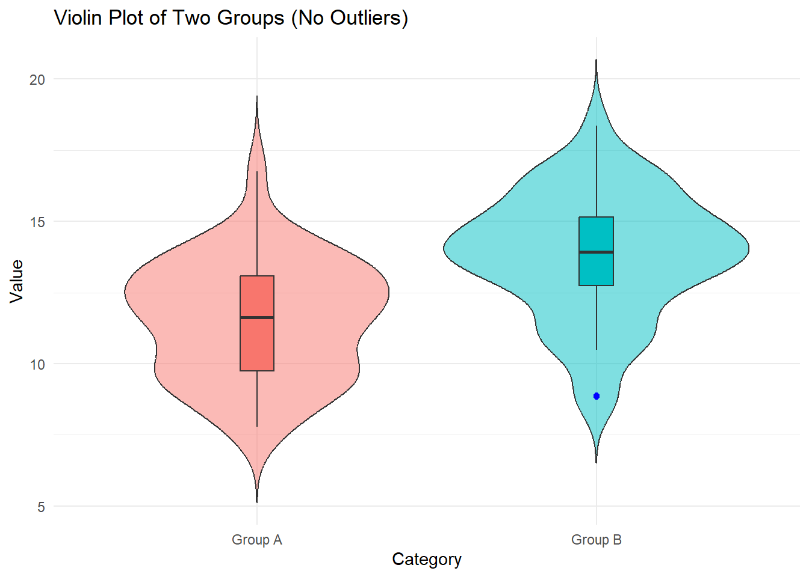
Problem 15
You receive data about voting intention in a Norwegian community. Each bar represents the percentage of people in this community that wants to vote for a given party. Only people who intend to vote have been counted.
Which parties are most and least popular in this community?
What is the approximate percentage point difference between the most and least popular parties?
What problems could have been run into by using a pie chart instead of a bar plot?
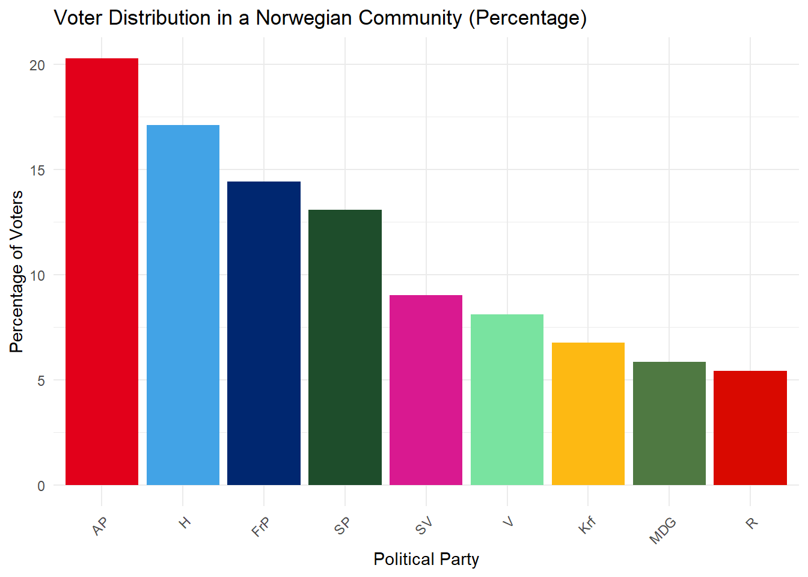
Exercises about interpreting plots
Show solutions
It clear that AP (Labour party) is the most popular and R (Red party) is the least popular in this community.
AP has a voter turnout of about 20 percent wheres R has a turnout of about 5 percent. We thus get a difference of about 15 percentage points between the most and least popular parties.
For one, the pie chart would not clearly indicate the relative popularities of each party. It could for instance be very hard to tell which party was more popular between MDG and R, as they are very close in size here. Secondly, this pie chart would be very distracting top look at and hard to read, as you would not be able to read the information directly from the chart. Underneath there is an example. You could for instance add percentage labels to the chart below, but that would be visually much busier tha nthe bar plot as well as would work poorly when slices get very small.
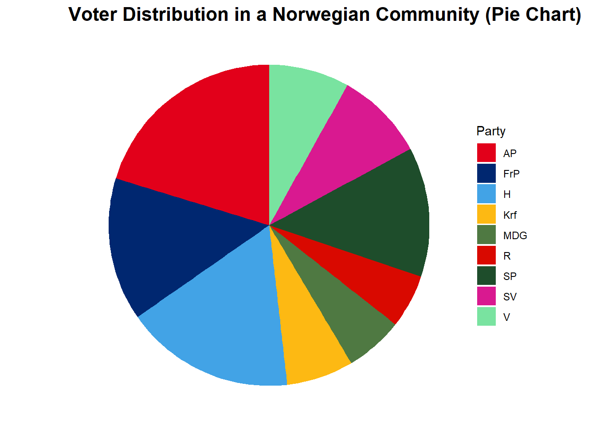
Problem 16
Consider the histogram below. The y-axis can be interpreted as percentages. The histogram shows the distributions of yearly salaries of a population in an area.
What percentage of people in this population have salaries in the most common interval?
What are key differences between histograms and bar plots.
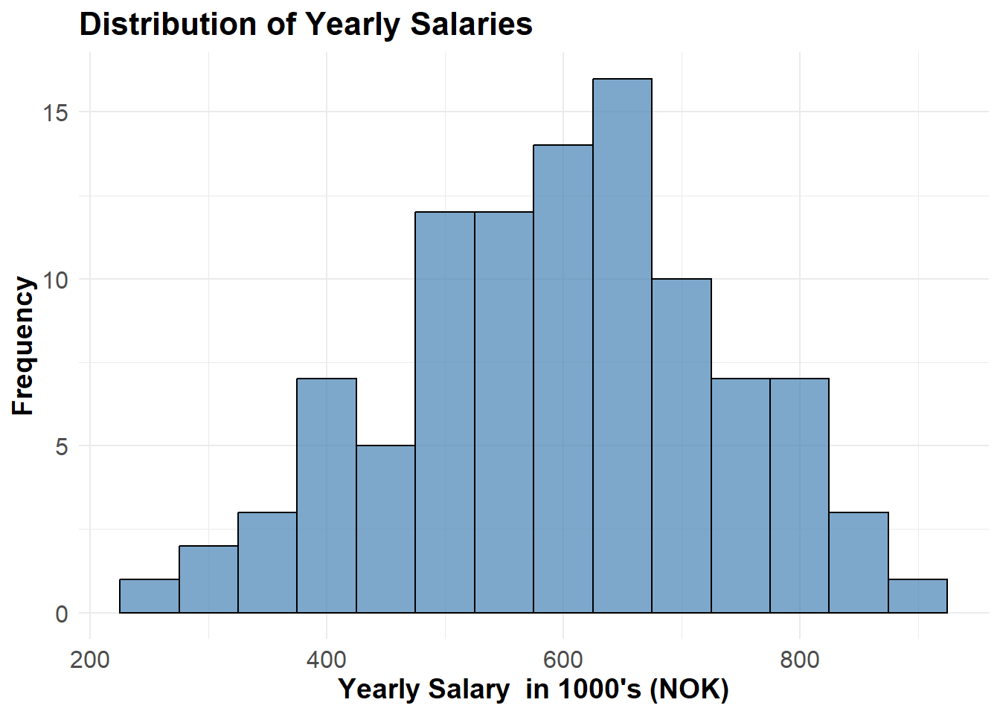
Show solutions
The tallest bin indicates the most common interval for salaries and it seems to include about 15 percent of the people in the population. The tallest bin seems to be somewhere between 600k and 700k NOK.
In a histogram each bin represents an interval of values, and any datapoint which falls within that interval will contribute to the height of that bin. A histogram will also necessarily represent the distribution of numerical sample data. A bar plot, however, represents the relative frequency of categorical data.
Problem 17
Comment on the below scatterplot, focus on whether or not you believe the X and Y variables are dependent or not.
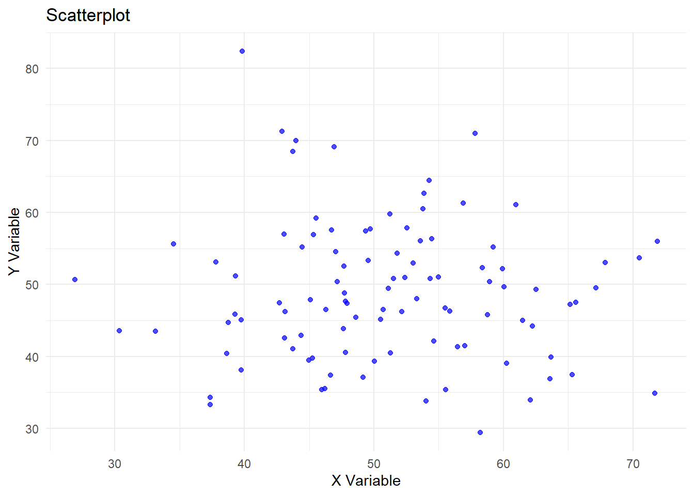
Show solutions
In this scatterplot there are no clear signs of correlation between X and Y. The closest thing one might get is that there seem to be fewer X and Y observations of more extreme values, however, that still doesn’t imply dependence. Each point seems randomly scattered out and there is no pattern to see here.
Problem 18
Comment on the below scatterplot, focus on whether or not you believe the X and Y variables are dependent or not.
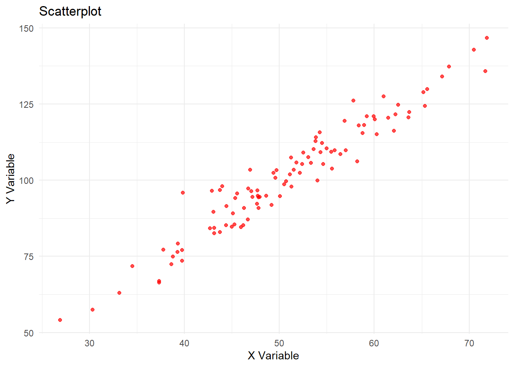
Show solutions
Here there is a clear linear dependence between the X and Y variables. There correlation seems to be almost a perfect positive correlation of 1. This can very easily be illustrated by drawing a best fit line through the point. The image below illustrates the strong linear relationship.
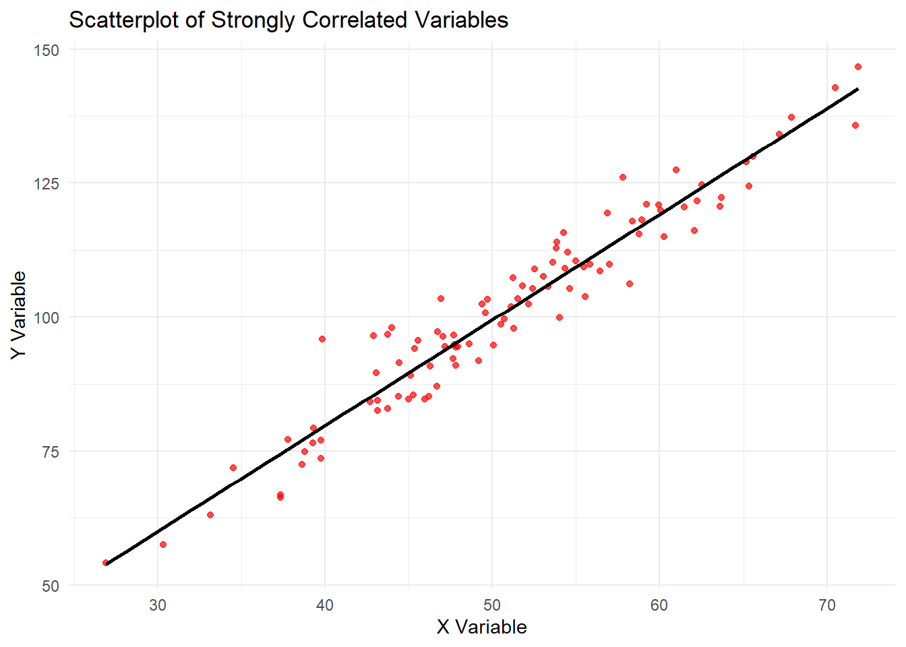
Problem 19
Which of the following histograms are closer to a normal (Gaussian) distribution?
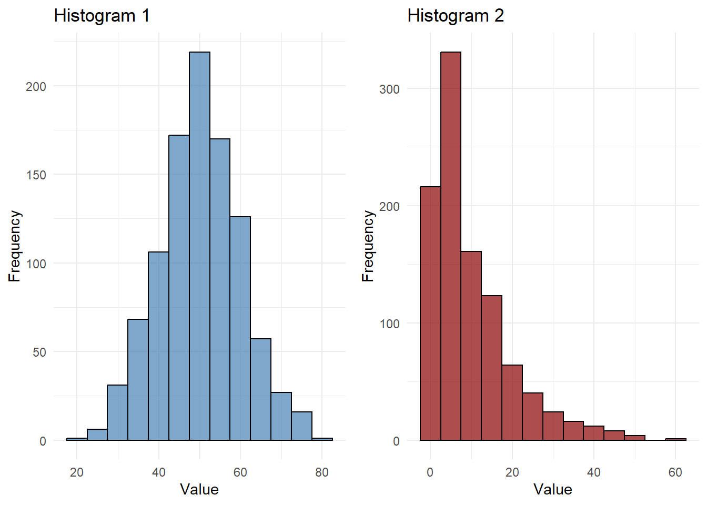
Show solutions
Obviously 1 is far closer to a normal distribution than 2 is. We can clearly see that 1 is very close to the characteristic bell shape and a very symmetric distribution of points around the mean. Histogram 2 on the other hand is not at all symmetric around its mean and does not have the iconic shape, so it can easily be identified as non-normally distributed.
Problem 20
Determine whether the below histograms display distributions that are right skewed, left skewed or neither.
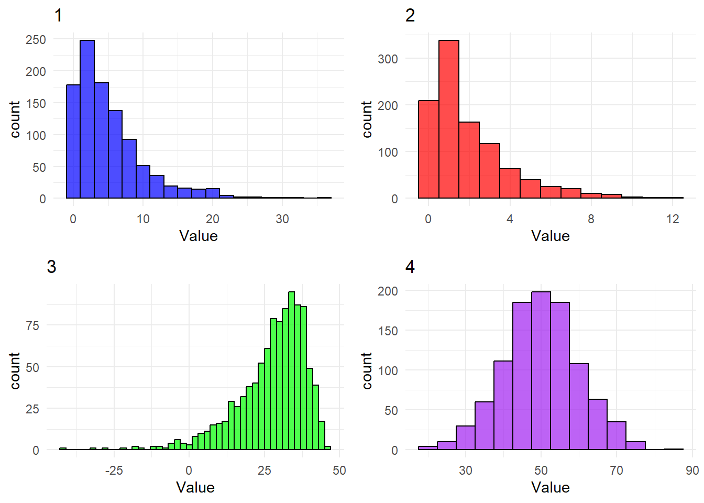
Show solutions
Histogram number 1 is clearly extremely right skewed, which we can tell from the comparative length of the right tail and that the mass is concentrated on the left side of the plot. Number 2 is also very right skewed, but not quite to the extreme of 1.
Histogram number 3 on the other hand is very left skewed, which should be obvious as its almost the complete opposite of the number 1.
Histogram number 4 doesn’t seem to have any particular skewness, in actuality it seems remarkably symmetric.
Problem 21
Consider the 4 following histograms. Rank them from 1 to 4, where 1 indicates the “lightest tails” and 4 indicates “the heaviest tails”

Show solutions
The correct ranking is 1-D, 2-A, 3-B, 4-C
Recall that heavier tails implies that more mass will be farther away from the mean. Once one realises this fact it should be simple to order the histograms based on weights of tails. No points reach very far away from the mean of D, a few more for A, as one can tell by the longer interval on the x axis, even more are far away from the mean in B, and a very large amount in C.
Problem 22
Rank these histograms created from normally (gaussian) distributed data in 3 different ways, from 1-6. In the first ranking, 1 should be the lowest mode and 6 should be the highest mode. In the second ranking do the same with the median and in the third with the mean. As there are a lot of data points in each of these histograms, you can treat them as perfect normal distributions.
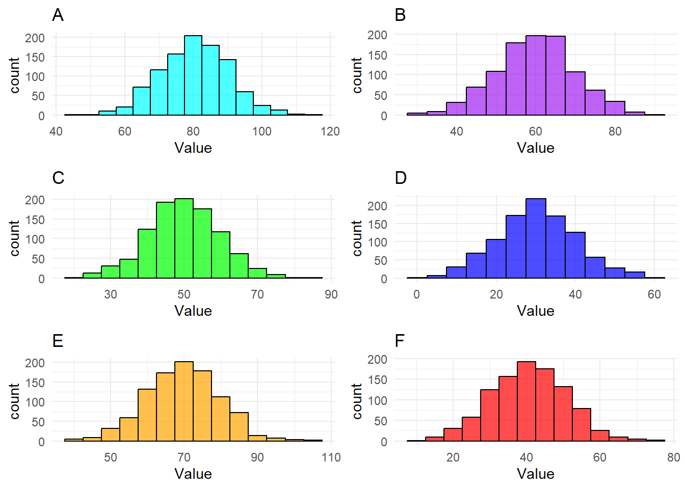
Show solutions
The twist here is that since the data is all normally distributed the mode, mean and median is equal. I.e., if you’ve found one ranking you’ve found them all.
The correct ranking is 1-D, 2-F, 3-C, 4-B, 5-E, 6-A
The mode should be obvious in each one at it is indicated by the tallest bin. Furthermore, since all the histograms are so symmetric both the medians and mean should also be well within the middle bins as well. As such we end up with the same ranking in all three cases.
Problem 23
Rank the following three histograms from lowest to highest variance. Consider the data in each case to eb normally distributed.
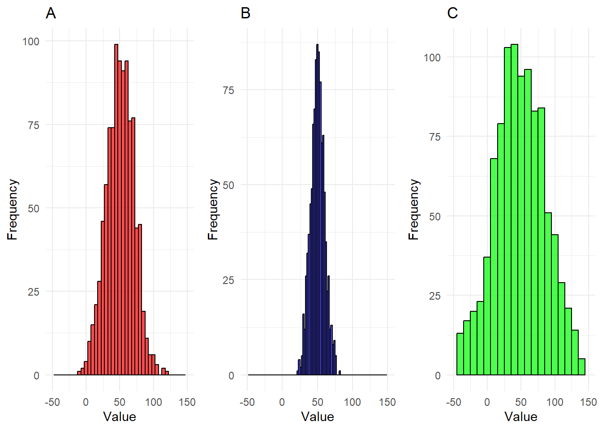
Show solutions
The correct ranking is
1-B, 2-A, 3-C
Recall that variance increases as spread of data increases. It’s clear that the data in B all fits within a pretty narrow interval, whereas the data in C needs a much larger interval to fit all of its observatrions. It’s not even entirely clear that we see all observations of C in the given interval. A seems relatively average, it at least does not stand out in any direction like B and C do.
Problem 24
For this and the next problem you will need to recall how you compute means an variances.
\[ \overline{X}=\frac{1}{n}\sum^{n}_{i=1}X_i, \ S^2_X=\frac{1}{n-1}\sum^n_{i=1}\left(X_i-\overline{X}\right)^2\]
Consider the data \[A=\{a_1, a_2, ..., a_n\}\]. Now add 5 to every observation such that you get \[A'=\{(a_1+5),...,(a_n+5)\}\]. What would happen to the mean and the variance?
Show solutions
We now have the situation
\[ A=\{a_1,...,a_n\}\rightarrow A'=\{(a_1+5),...,(a_n+5)\} \] Let’s the old and new means and variances have the following names.
\[\begin{align*} \overline{X}_{A} \rightarrow \overline{X}_{A'} \\ S^2_{A} \rightarrow S^2_{A'} \end{align*}\]
We will first consider what happens to the mean. Let’s try to compute the mean for \(A'\) \[\begin{align*} \overline{X}_{A'}=\frac{1}{n}\sum^n_{i=1}(a_i+5)=\frac{1}{n}\sum^n_{i=1}5+\sum^n_{i=1}a_i \\ =\frac{1}{n}5n+\sum^n_{i=1}a_i=5+\overline{X}_{A}=\overline{X}_{A}+5 \end{align*}\] From this argument it should be clear that the 5 greater for \(A'\) than for \(A\), just like the case is for each of our observations.
We can now move on to considering what will happen to the variance. \[\begin{align*} S_{A'}=\frac{1}{n-1}\sum^n_{i=1}\left((a_i+5)-\overline{X}_{A'}\right)^2 =\frac{1}{n-1}\sum^n_{i=1}\left((a_i+5)-(\overline{X}_{A}+5)\right)^2 \\ =\frac{1}{n-1}\sum^n_{i=1}\left(a_i+5-\overline{X}_{A}-5\right)^2 =\frac{1}{n-1}\sum^n_{i=1}\left(a_i+5-\overline{X}_{A}-5\right)^2 \\ =\frac{1}{n-1}\sum^n_{i=1}\left(a_i-\overline{X}_{A}\right)^2 =S_{A}^2 \end{align*}\] Alas, the variance has not changed at all! The reasoning here is actually quite simple. All our observations may have increased by 5, but so has the mean. This means that the absolute difference between each individual point and the mean is the same for both data sets. So even though the data is different, it doesn’t vary any more or less in one case or the other.
Extra challenge: There is only one key difference that would come to be if you were to subtract 5 to every datapoint instead of adding 5. What is that difference?
Problem 25
Consider the data \(B=\{b_1, b_2, ..., b_n\}\). Now double every observation such that you get \(B'=\{2b_1,...,2b_n\}\). What would happen to the mean and the variance?
Show solutions
We now have the situation
\[ B=\{b_1,...,b_n\}\rightarrow B'=\{2b_1,...,2b_n\} \] Let’s the old and new means and variances have the following names.
\[\begin{align*} \overline{X}_{B} \rightarrow \overline{X}_{B'} \\ S^2_{B} \rightarrow S^2_{B'} \end{align*}\]
We will first consider what happens to the mean. Let’s try to compute the mean for \(B'\) \[\begin{align*} \overline{X}_{B'}=\frac{1}{n}\sum^n_{i=1}2b_i= 2\frac{1}{n}\sum^n_{i=1}b_i=2\overline{X}_B \end{align*}\] It’s very clear that if every datapoint was to double, so would the mean.
Now we compute the new variance. \[\begin{align*} S_{B'}=\frac{1}{n-1}\sum^n_{i=1}\left(2b_i-\overline{X}_{B'}\right)^2 =\frac{1}{n-1}\sum^n_{i=1}\left(2b_i-2\overline{X}_{B}\right)^2 \\ =\frac{1}{n-1}\sum^n_{i=1}\left(2(b_i-\overline{X}_B)\right)^2 =\frac{1}{n-1}\sum^n_{i=1}2^2\left(b_i-\overline{X}_B\right)^2 \\ =\frac{1}{n-1}\sum^n_{i=1}4\left(b_i-\overline{X}_B\right)^2 =4\frac{1}{n-1}\sum^n_{i=1}\left(b_i-\overline{X}_B\right)^2 =4S_{B}^2 \end{align*}\] So, by multiplying each datapoint by 2, we end up multiplying the variance by 4 (2 squared!!). This also makes surprisingly intuitive sense. When we double each datapoint, we are also going to double the distance between that point and the mean. When computing for the variance we find the squared difference between the data points and the mean, and thus, we end up multiplying our variance with 2 squared.
Extra challenge: What would happen to the variance if we were to halve the value of each datapoint instead of doubling them?
Problem 26
Consider the data \[C=\{c_1, c_2, ..., c_n\}\]. Now consider what would happen if you were to amend the data by adding more and more of a single observation, \(d\) until you’ve added an endless amount of it. What would happen to the mode, median, 1st quartile, 3rd quartile, IQR, max, min, mean, variance and standard deviation? (Note: this exercise should be solved by reasoning rather than with rigorous mathematical arguments!!)
Show solutions
To make every point clear, let’s go summary statistic by summary statistic.
Mode: The consequence on the mode is probably the most obvious one. Recall that the mode is the most common observation, i.e. the observation that occurs most often in the data. If the observation we are adding, \(d\), is not already the mode, then by adding an endless amount of it, and only it, at some point it will become the mode. It is inevitable that when we have limited data, adding an endless amount of a singular observartion will eventually result in it becoming the mode. Consider a quick example \[C=\{1,2,1,1,1,3\}, \ d=5\] If we were to add \(d=5\) once or twice, the mode would still be 1. However, if we keep adding \(d=5\), then eventually 5 will become the mode. Once \(d\) has become the mode, the mode will not change if we keep adding to the data.
Median: The consequence on the median is similar to the one on the mode, in that eventually, the median will end up equaling \(d\). Eventually, by adding \(d\) more and more to the data, more than half of the observartions will be \(d\), and as such, no matter what \(d\) equals, it will be the median. Let’s consider the an example. \[C=\{1,1,1,1,2,3\}\] If we consider \(d=5\), as above, we see what by adding it once, it won’t be the median. However if we were to add it 10 times for instance such that we get, more than half of the data would consist of \(d\), which means that the middlemost values of the data would also have to be \(d\). (The exact same case would play out if \(d\) was a much higher maximum or the minimum value of the data). The cases where it would take the most for \(d\) to become the median are the ones where it’s either the maximum or the minimum, in all other cases it will take less for it to become the median.
1st and 3rd quartile: The argument for the 1st and 3rd quartiles is exactly the same as for the median. The more iterations you add, the more of the data will be \(d\). After a while close to all data in would equal \(d\), and at that point it would also cover both the 1st and 3rd quartile.
IQR: Recall that IQR is the difference between quartiles. From the argument above we know that at some point both the 1st and 3rd quartiles will be equal to \(d\), and at that point the IQR will obviously be 0. Depending on the data the IQR could increase for a bit at first, but after either the 1st or 3rd quartile becomes \(d\), it will start approaching 0.
Min and max: The min and max will change only if \(d\) is either the minimum or maximum value in the set, and only if \(d\) is not part of the original data. However, if there are values that are larger and smaller than \(d\) in the original data, they will not change, no matter how many iterations we add. Consider for example: \(C=\{1,2,1,1,1,3\}, \ d=2\) We would then end up with $ C’={1,1,1,1,2,2,2,2,…,2,2,2,3}$ No matte how many times 2 is added, the max and min will not change.
Mean: In problem 8 we considered what would happen if we were to add a new observation with the same value as the mean, and we concluded there would be no change. So if \(\overline{X}_{C}=d\), the mean would not change no matter how many times we were to iterate on the data by adding another observation, \(d\). Now consider what would happen if \(d\) is different from the. Let \(m\) be the number of observations in the original data, and \(n\) be the number we get when we add more observations. Computing the mean would then give us. \[\begin{align*} \overline{X}_{C'}=\frac{1}{n}\left((n-m)d+\sum^m_{i=1}c_i\right) =\frac{1}{n}\left((n-m)d+m\overline{X}_C\right)\\ =\frac{n-m}{n}d+\frac{m}{n}\overline{X}_C \end{align*}\]
Now we let \(n\) approach infinity.
\[\begin{align*} \lim_{n\rightarrow\infty}\overline{X}_{C'} =\lim_{n\rightarrow\infty}\left(\frac{n-m}{n}d+\frac{m}{n}\overline{X}_C\right)\\ =\lim_{n\rightarrow\infty}\frac{n-m}{n}d+\lim_{n\rightarrow\infty}\frac{m}{n}\overline{X}_C\\ =1*d+0*\overline{X}_{C}=d \end{align*}\]
This essentially means, that after a while the mean will end up very close to \(d\), and it will keep approaching until it reaches \(d\). The nature of a limit like this means that it will end up infinitesimally close as long as we iterate a finite amount of data points, but the limit still holds true. Summed up, we can think that when a single observation makes up a vast vast majority of the data, other single observations will have basically no effect on the mean.
Variance and standard deviation: In problem 8 we also concluded that the variance would decrease when adding more observations close or equal to the mean. Since we know the limit of the mean is \(d\) from above let’s argue based on that. When almost all of the data is centered around one point, and every other observation is negligible in comparison, they will contribute almost nothing until the variance reaches 0. Directly following from this, we get that the standard deviation will also approach 0, as it is the positive square root of the variance.
(Note: the algebraic argument below is very abridged, it’s more to get the point across)
\[\begin{align*} \lim_{n\rightarrow\infty}S_{C'}^2 =\lim_{n\rightarrow\infty}\frac{1}{n-1}\left(\sum_{i=m+1}^n(d-\overline{X}_{C'})^2 +\sum^m_{i=1}(c_i-\overline{X}_{C'})^2\right) \\ =\lim_{n\rightarrow\infty}\frac{1}{n-1}\sum_{i=m+1}^n(d-\overline{X}_{C'})^2+ \lim_{n\rightarrow\infty}\frac{1}{n-1}\sum^m_{i=1}(c_i-\overline{X}_{C'})^2=\cdots \end{align*}\]
We know that the first of these two sums will approach 0, as the difference between the mean and \(d\) will approach 0. As such we will treat this first sum as 0.
\[\begin{align*} \cdots=0+\lim_{n\rightarrow\infty}\frac{1}{n-1}\sum^m_{i=1}(c_i-\overline{X}_{C'})^2\\ =\lim_{n\rightarrow\infty}\frac{1}{n-1}\sum^m_{i=1}(c_i^2-2c_i\overline{X}_{C'}+\overline{X}_{C'}^2)\\ =\lim_{n\rightarrow\infty}\frac{1}{n-1}* \lim_{n\rightarrow\infty}\sum^m_{i=1}(c_i^2-2c_i\overline{X}_{C'}+\overline{X}_{C'}^2)\\ =\lim_{n\rightarrow\infty}\frac{1}{n-1}* \left(c_i^2-2c_id+d^2\right)=0*\left(c_i^2-2c_id+d^2\right)=0 \end{align*}\]
Problem 27
You are given the following dataset containing information about survival of people travelling on the Titanic in 1912. The data contains counts of how many who survived or not of groups by ticket class, sex, age (child/adult). Can you categorize the columns based on whether they are categorical, numeric, binary, integer or real?
| Class | Sex | Age | Survived | Freq |
|---|---|---|---|---|
| 1st | Male | Child | No | 0 |
| 2nd | Male | Child | No | 0 |
| 3rd | Male | Child | No | 35 |
| Crew | Male | Child | No | 0 |
| 1st | Female | Child | No | 0 |
| 2nd | Female | Child | No | 0 |
| 3rd | Female | Child | No | 17 |
| Crew | Female | Child | No | 0 |
| 1st | Male | Adult | No | 118 |
| 2nd | Male | Adult | No | 154 |
Show suggested solutions
- Class: Categorical, although could be treated as ordinal (1st > 2nd > 3rd > Crew)
- Sex: Binary (Male/female)
- Age: Binary (Child/adult)
- Survived: Binary (no/yes)
- Freq: Numerical, integer.